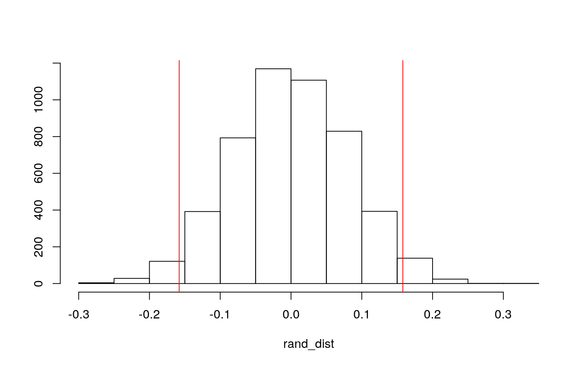
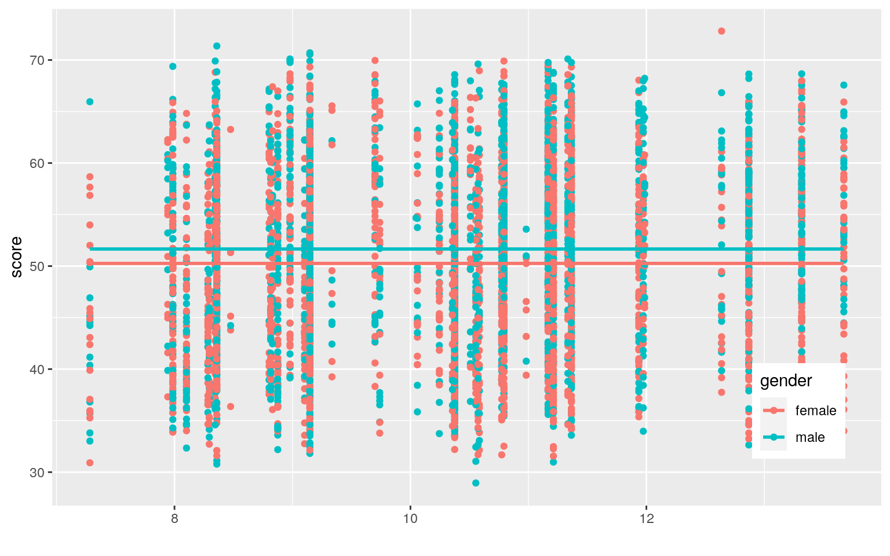
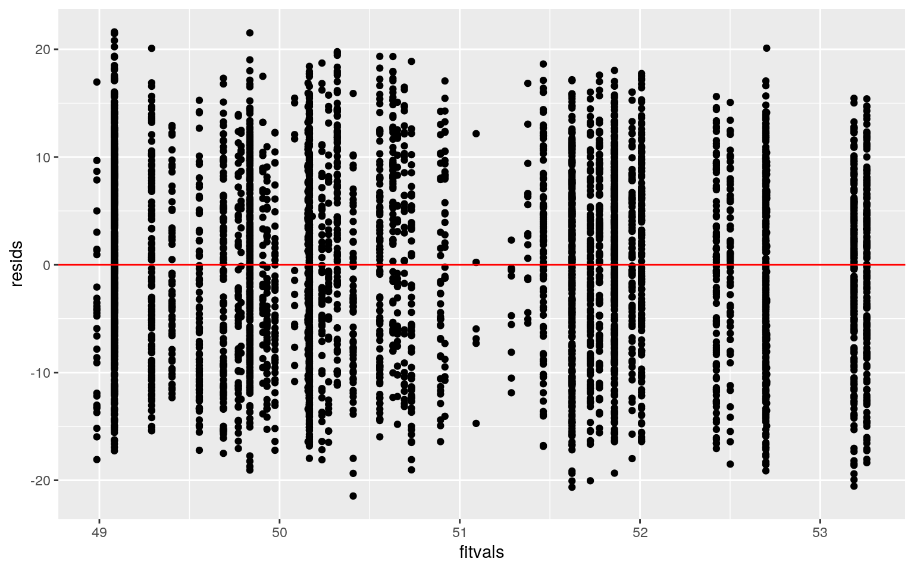
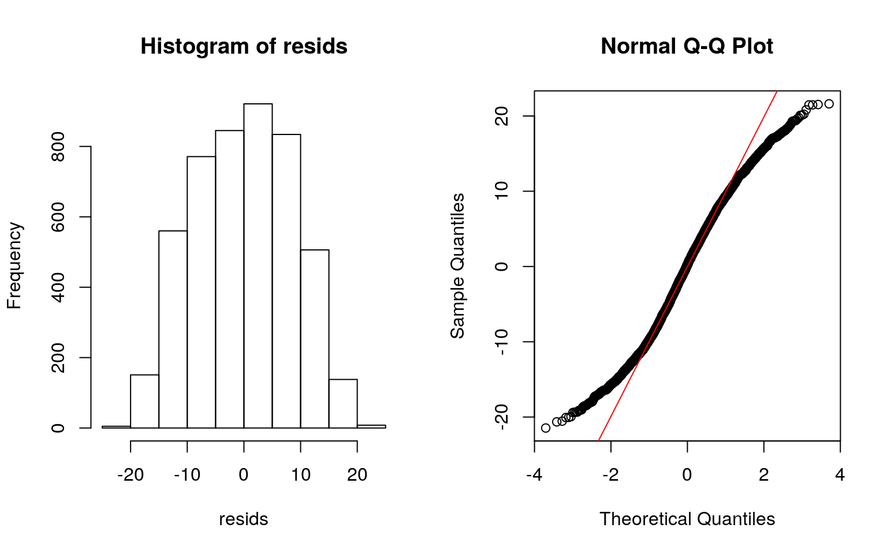
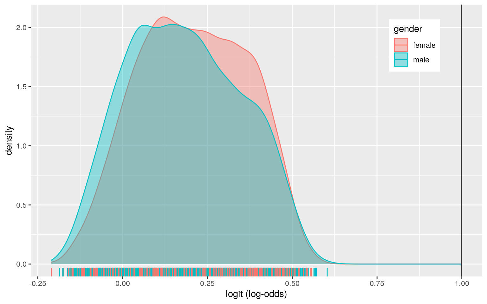
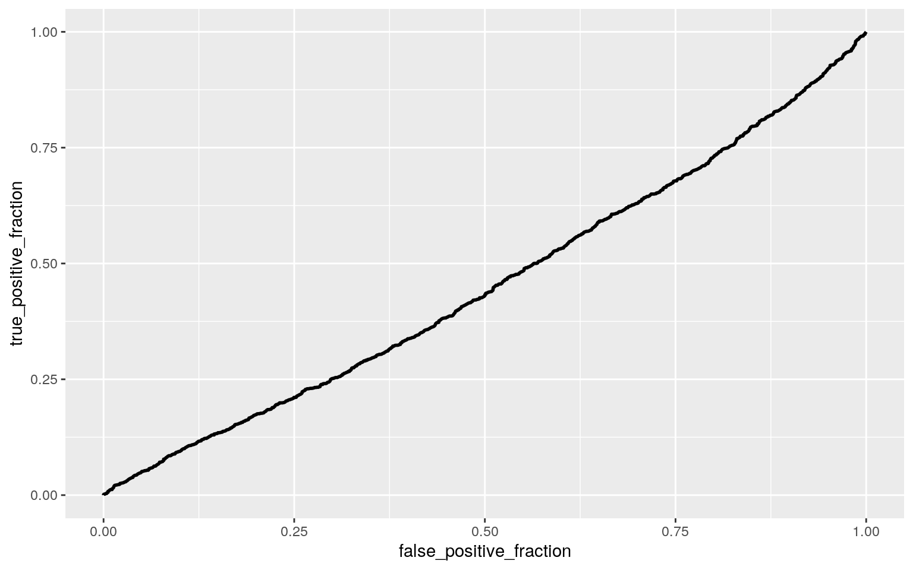

A knitted R Markdown document (preferably HTML) and the raw R Markdown file (as .Rmd) should both be submitted to Canvas by 11:59pm on the due date. These two documents will be graded jointly, so they must be consistent (i.e., don’t change the R Markdown file without also updating the knitted document). In the .Rmd file for Project 2, you can copy the first code-chunk into your project .Rmd file to get better formatting. Notice that you can adjust the opts_chunk$set(…) above to set certain parameters if necessary to make the knitting cleaner (you can globally set the size of all plots, etc). You can copy the set-up chunk in Project2.Rmd: I have gone ahead and set a few for you (such as disabling warnings and package-loading messages when knitting)!
collegedist_tidy <- read.csv("collegedist.csv")My dataset describes the distances between colleges and high school students’ homes in 1980. There are 4,739 observations and 14 variables. The dataset included variables such as the gender and ethnicity of the students, as well as their base year composite test scores (“score”). The state hourly wage in manufacturing in 1980 was included as well. The fcollege and mcollege variables indicate whether or not the student’s father and mother are college graduates, respectively. Whether or not the student’s family owned a home was also included as well as the family income. The region in which the student lived was included as well, in addition to the county’s unemployment rate in 1980 and the average tuition for a 4-year college in that state.
library(dplyr)
library(mvtnorm)
library(ggExtra)
collegedist <- collegedist_tidy
set.seed(1234)
dplyr::sample_n(collegedist, 10)## X gender ethnicity score fcollege mcollege home urban
unemp wage distance tuition education
## 1 1004 female other 56.16 no no yes no 4.0 9.68 5.0
1.09353 15
## 2 623 female other 43.58 no yes yes no 7.5 9.96 0.2
1.40416 14
## 3 2693 female other 51.39 no no yes no 6.2 10.51 5.0
0.82448 16
## 4 934 female afam 51.31 no no no no 6.3 7.33 2.0 0.65589
12
## 5 7001 female other 59.56 no no no yes 4.3 8.89 1.0
0.25751 12
## 6 2948 female hispanic 43.82 no no yes yes 10.8 9.92 0.4
0.45497 12
## 7 2146 male other 38.27 no no yes no 14.0 12.15 3.5
1.16628 12
## 8 3175 female afam 57.89 no no yes no 8.2 7.54 1.2
0.81871 12
## 9 2774 male other 49.71 no no yes no 4.3 9.73 10.5
0.77829 14
## 10 2374 male other 54.54 yes yes yes no 6.9 10.28 0.5
0.93187 17
## income region
## 1 low other
## 2 low other
## 3 low other
## 4 low other
## 5 low west
## 6 low other
## 7 low other
## 8 low other
## 9 low other
## 10 high other#MANOVA
man1 <- manova(cbind(score, tuition, wage)~gender, data=collegedist)
summary(man1)## Df Pillai approx F num Df den Df Pr(>F)
## gender 1 0.0068034 10.812 3 4735 4.464e-07 ***
## Residuals 4737
## ---
## Signif. codes: 0 '***' 0.001 '**' 0.01 '*' 0.05 '.' 0.1
' ' 1summary.aov(man1)## Response score :
## Df Sum Sq Mean Sq F value Pr(>F)
## gender 1 2306 2305.89 30.642 3.27e-08 ***
## Residuals 4737 356471 75.25
## ---
## Signif. codes: 0 '***' 0.001 '**' 0.01 '*' 0.05 '.' 0.1
' ' 1
##
## Response tuition :
## Df Sum Sq Mean Sq F value Pr(>F)
## gender 1 0.04 0.044479 0.3858 0.5345
## Residuals 4737 546.07 0.115278
##
## Response wage :
## Df Sum Sq Mean Sq F value Pr(>F)
## gender 1 6.3 6.3282 3.5101 0.06106 .
## Residuals 4737 8540.2 1.8029
## ---
## Signif. codes: 0 '***' 0.001 '**' 0.01 '*' 0.05 '.' 0.1
' ' 1pairwise.t.test(collegedist$score, collegedist$gender, p.adj="none")##
## Pairwise comparisons using t tests with pooled SD
##
## data: collegedist$score and collegedist$gender
##
## female
## male 3.3e-08
##
## P value adjustment method: nonepairwise.t.test(collegedist$tuition, collegedist$gender, p.adj="none")##
## Pairwise comparisons using t tests with pooled SD
##
## data: collegedist$tuition and collegedist$gender
##
## female
## male 0.53
##
## P value adjustment method: nonepairwise.t.test(collegedist$wage, collegedist$gender, p.adj="none")##
## Pairwise comparisons using t tests with pooled SD
##
## data: collegedist$wage and collegedist$gender
##
## female
## male 0.061
##
## P value adjustment method: none#Type I error rate = 0.3016627
1-0.95^7## [1] 0.3016627#Bonferroni correction = 0.007142857
0.05/7## [1] 0.007142857The overall MANOVA is significant. 1 MANOVA, 3 ANOVA, and 3 t-tests were performed. The probability of at least one type I error was 0.3016627. After adjusting the significance level using the Bonferroni correction, it is 0.007142857. Male and female students seem to differ significantly in terms of base year composite test scores, but do not differ significantly in terms of the average tuition for a 4-year college near them or their state’s hourly wage in manufacturing in 1980. MANOVA assumptions include random sampling, independent observations, multivariate normality of DVs, homogeneity of within-group covariance matrices, linear relationships among DVs, no extreme univariate or multivariate outliers, and no multicollinearity; in order words, DVs cannot be too correlated with each other. These assumptions are most likely not met.
library(tidyverse)
set.seed(348)
head(collegedist)## X gender ethnicity score fcollege mcollege home urban
unemp wage distance tuition education
## 1 1 male other 39.15 yes no yes yes 6.2 8.09 0.2 0.88915
12
## 2 2 female other 48.87 no no yes yes 6.2 8.09 0.2
0.88915 12
## 3 3 male other 48.74 no no yes yes 6.2 8.09 0.2 0.88915
12
## 4 4 male afam 40.40 no no yes yes 6.2 8.09 0.2 0.88915
12
## 5 5 female other 40.48 no no no yes 5.6 8.09 0.4 0.88915
13
## 6 6 male other 54.71 no no yes yes 5.6 8.09 0.4 0.88915
12
## income region
## 1 high other
## 2 low other
## 3 low other
## 4 low other
## 5 low other
## 6 low othercollegedist %>% group_by(gender) %>% summarize(means=mean(unemp)) %>% summarize('mean_diff'=diff(means))## # A tibble: 1 x 1
## mean_diff
## <dbl>
## 1 -0.158rand_dist <- vector()
for(i in 1:5000){
new <- data.frame(unemp=sample(collegedist$unemp), gender=collegedist$gender)
rand_dist[i] <- mean(new[new$gender=="female",]$unemp)- mean(new[new$gender=="male",]$unemp)
}
{hist(rand_dist,main="", ylab=""); abline(v = c(-0.158, 0.158), col="red")}
#two-tailed p value
mean(rand_dist>0.158 | rand_dist< -0.158)## [1] 0.051t.test(data=collegedist, unemp~gender)##
## Welch Two Sample t-test
##
## data: unemp by gender
## t = 1.9603, df = 4614.2, p-value = 0.05003
## alternative hypothesis: true difference in means is not
equal to 0
## 95 percent confidence interval:
## -1.761696e-05 3.152045e-01
## sample estimates:
## mean in group female mean in group male
## 7.668346 7.510753Ho: mean unemployment rate is the same for females vs males. Ha: mean unemployment rate is different for females vs males. The p-value of 0.051 indicates that the test is not statistically significant and indicates strong evidence in support of the null hypothesis. Therefore, we fail to reject the null hypothesis and reject the alternative hypothesis, concluding that the mean unemployment rate is different for females vs males.
library(lmtest)
library(sandwich)
fit<-lm(score ~ tuition + wage, data = collegedist)
summary(fit)##
## Call:
## lm(formula = score ~ tuition + wage, data = collegedist)
##
## Residuals:
## Min 1Q Median 3Q Max
## -21.4584 -6.7292 0.2362 6.6840 21.6165
##
## Coefficients:
## Estimate Std. Error t value Pr(>|t|)
## (Intercept) 43.57360 0.89304 48.793 < 2e-16 ***
## tuition 2.64574 0.38822 6.815 1.06e-11 ***
## wage 0.54315 0.09814 5.535 3.29e-08 ***
## ---
## Signif. codes: 0 '***' 0.001 '**' 0.01 '*' 0.05 '.' 0.1
' ' 1
##
## Residual standard error: 8.602 on 4736 degrees of
freedom
## Multiple R-squared: 0.02318, Adjusted R-squared: 0.02277
## F-statistic: 56.2 on 2 and 4736 DF, p-value: < 2.2e-16ggplot(collegedist, aes(x=tuition + wage, y=score, group = gender)) + geom_point(aes(color=gender)) + geom_smooth(method="lm", formula=y~1, se=F, fullrange=T, aes(color=gender)) + theme(legend.position=c(0.9, 0.19)) + xlab("")
resids <- fit$residuals
fitvals <- fit$fitted.values
ggplot() + geom_point(aes(fitvals, resids)) + geom_hline(yintercept=0, color='red')
par(mfrow=c(1,2));hist(resids);qqnorm(resids);qqline(resids, col='red')
coeftest(fit, vcov=vcovHC(fit)) ##
## t test of coefficients:
##
## Estimate Std. Error t value Pr(>|t|)
## (Intercept) 43.573602 0.886536 49.1504 < 2.2e-16 ***
## tuition 2.645743 0.390475 6.7757 1.389e-11 ***
## wage 0.543148 0.097813 5.5529 2.962e-08 ***
## ---
## Signif. codes: 0 '***' 0.001 '**' 0.01 '*' 0.05 '.' 0.1
' ' 1summary(fit)##
## Call:
## lm(formula = score ~ tuition + wage, data = collegedist)
##
## Residuals:
## Min 1Q Median 3Q Max
## -21.4584 -6.7292 0.2362 6.6840 21.6165
##
## Coefficients:
## Estimate Std. Error t value Pr(>|t|)
## (Intercept) 43.57360 0.89304 48.793 < 2e-16 ***
## tuition 2.64574 0.38822 6.815 1.06e-11 ***
## wage 0.54315 0.09814 5.535 3.29e-08 ***
## ---
## Signif. codes: 0 '***' 0.001 '**' 0.01 '*' 0.05 '.' 0.1
' ' 1
##
## Residual standard error: 8.602 on 4736 degrees of
freedom
## Multiple R-squared: 0.02318, Adjusted R-squared: 0.02277
## F-statistic: 56.2 on 2 and 4736 DF, p-value: < 2.2e-16The coefficient estimate for tuition shows that for every 1000 USD increase in tuition, the score increases by 2.64574. The coefficient estimate for wage shows that for every $1 increase in hourly wage on average, the score increases by 0.54315. The standard error for the intercept is 0.89304. The standard error for tuition is 0.38822. The standard error for wage is 0.09814. From the graph, it appears that linearity, normality, and homoskedasticity look fine. THe standard error did not differ. The new standard error for the intercept is 0.886536. The new standard error for tuition is 0.390475. The new standard error for wage is 0.097813. The proportion of the variation in the outcome of the model explained is 0.02277.
boot_dat <- sample_frac(collegedist, replace=T)
samp_distn <- replicate(5000, {
boot_dat <- sample_frac(collegedist, replace=T)
fit <- lm(score ~ tuition + wage, data=boot_dat)
coef(fit)
})
samp_distn %>% t %>% as.data.frame %>% summarize_all(sd)## (Intercept) tuition wage
## 1 0.8926046 0.3870123 0.09890067The new intercept is 0.8926046. The new standard error for tuition is 0.3870123. The new standard error for wage is 0.09890067.
library(tidyverse)
library(lmtest)
library(plotROC)
data <- collegedist %>% mutate(y=ifelse(gender=="female",1,0))
data$gender <- factor(data$gender, levels=c("female", "male"))
head(data)## X gender ethnicity score fcollege mcollege home urban
unemp wage distance tuition education
## 1 1 male other 39.15 yes no yes yes 6.2 8.09 0.2 0.88915
12
## 2 2 female other 48.87 no no yes yes 6.2 8.09 0.2
0.88915 12
## 3 3 male other 48.74 no no yes yes 6.2 8.09 0.2 0.88915
12
## 4 4 male afam 40.40 no no yes yes 6.2 8.09 0.2 0.88915
12
## 5 5 female other 40.48 no no no yes 5.6 8.09 0.4 0.88915
13
## 6 6 male other 54.71 no no yes yes 5.6 8.09 0.4 0.88915
12
## income region y
## 1 high other 0
## 2 low other 1
## 3 low other 0
## 4 low other 0
## 5 low other 1
## 6 low other 0data <- na.omit(data)
fit2<- glm(y~score + tuition, data=data, family = "binomial")
coeftest(fit2)##
## z test of coefficients:
##
## Estimate Std. Error z value Pr(>|z|)
## (Intercept) 1.1385664 0.1814456 6.2750 3.497e-10 ***
## score -0.0186488 0.0034079 -5.4721 4.446e-08 ***
## tuition 0.0084822 0.0869838 0.0975 0.9223
## ---
## Signif. codes: 0 '***' 0.001 '**' 0.01 '*' 0.05 '.' 0.1
' ' 1probs <- predict(fit2, type="response")
table(predict=as.numeric(probs>0.5), truth=data$y) %>% addmargins## truth
## predict 0 1 Sum
## 0 332 264 596
## 1 1807 2336 4143
## Sum 2139 2600 4739class_diag<- function(probs, truth){
#CONFUSION MATRIX: CALLCULATE ACCURACY, TPR, TNR, PPV
probs <- na.omit(probs)
tab <- table(factor(probs>0.5,levels=c("FALSE","TRUE")),truth)
acc=sum(diag(tab))/sum(tab)
sens=tab[2,2]/colSums(tab)[2]
spec=tab[1,1]/colSums(tab)[1]
ppv=tab[2,2]/rowSums(tab)[2]
f1=2*(sens*ppv)/(sens+ppv)
if(is.numeric(truth)==FALSE & is.logical(truth)==FALSE) truth<-as.numeric(truth)-1
#CALCULATE EXACT AUC
ord<-order(probs, decreasing=TRUE)
probs <- probs[ord]; truth <- truth[ord]
TPR=cumsum(truth)/max(1,sum(truth))
FPR=cumsum(!truth)/max(1,sum(!truth))
dup<-c(probs[-1]>=probs[-length(probs)], FALSE)
TPR<-c(0,TPR[!dup],1); FPR<-c(0,FPR[!dup],1)
n <- length(TPR)
auc <- sum( ((TPR[-1]+TPR[-n])/2) * (FPR[-1]-FPR[-n]) )
data.frame(acc,sens,spec,ppv,f1,auc)
}
class_diag(probs, data$y)## acc sens spec ppv f1 auc
## 1 0.562988 0.8984615 0.1552127 0.5638426 0.6928667
0.5469405data$logit<-predict(fit2, type="link")
data%>%ggplot() + geom_density(aes(logit, color=gender, fill=gender), alpha=0.4) + theme(legend.position=c(0.85, 0.85)) + geom_vline(xintercept=1)+xlab("logit (log-odds)") + geom_rug(aes(logit, color=gender))
ROCplot<-ggplot(data)+geom_roc(aes(d=gender, m=probs), n.cuts=0)
ROCplot
calc_auc(ROCplot)## PANEL group AUC
## 1 1 -1 0.4530623Because the coefficient estimates in context are negative for score and positive for tuition, it is likely that the two predictors significantly increase the probability of the gender of the student being male. Accuracy=0.562988. Sensitivity (TPR)=0.8984615. Specificity (TNR)=0.1552127. Precision (PPV)=0.5638426. AUC=0.5469405. The AUC from the ROC plot is 0.04530623. The AUC decreased.
**
You can choose ANY datasets you want that meet the above criteria for variables and observations. You can make it as serious as you want, or not, but keep in mind that you will be incorporating this project into a portfolio webpage for your final in this course, so choose something that really reflects who you are, or something that you feel will advance you in the direction you hope to move career-wise, or something that you think is really neat, or whatever. On the flip side, regardless of what you pick, you will be performing all the same tasks, so it doesn’t end up being that big of a deal.
If you are totally clueless and have no direction at all, log into the server and type
data(package = .packages(all.available = TRUE))This will print out a list of ALL datasets in ALL packages installed on the server (a ton)! Scroll until your eyes bleed! Actually, do not scroll that much… To start with something more manageable, just run the command on your own computer, or just run data() to bring up the datasets in your current environment. To read more about a dataset, do ?packagename::datasetname.
If it is easier for you, and in case you don’t have many packages installed, a list of R datasets from a few common packages (also downloadable in CSV format) is given at the following website: https://vincentarelbundock.github.io/Rdatasets/datasets.html.
A good package to download for fun/relevant data is fivethiryeight.
Run install.packages("fivethirtyeight"), load the packages with library(fivethirtyeight), run data(), and then scroll down to view the datasets. Here is an online list of all 127 datasets (with links to the 538 articles). Lots of sports, politics, current events, etc.
If you have already started to specialize (e.g., ecology, epidemiology) you might look at discipline-specific R packages (vegan, epi, respectively). We will be using some tools from these packages later in the course, but they come with lots of data too, which you can explore according to the directions above
However, you emphatically DO NOT have to use datasets available via R packages! In fact, I would much prefer it if you found the data from completely separate sources and brought them together (a much more realistic experience in the real world)! You can even reuse data from your SDS328M project, provided it shares a variable in common with other data which allows you to merge the two together (e.g., if you still had the timestamp, you could look up the weather that day: https://www.wunderground.com/history/). If you work in a research lab or have access to old data, you could potentially merge it with new data from your lab!
Here is a curated list of interesting datasets (read-only spreadsheet format): https://docs.google.com/spreadsheets/d/1wZhPLMCHKJvwOkP4juclhjFgqIY8fQFMemwKL2c64vk/edit
Here is another great compilation of datasets: https://github.com/rfordatascience/tidytuesday
Here is the UCI Machine Learning Repository: https://archive.ics.uci.edu/ml/index.php
Here is another good general place to look: https://www.kaggle.com/datasets
To help narrow your search down or to see interesting variable ideas, check out https://www.tylervigen.com/spurious-correlations. This is the spurious correlations website, and it is fun, but if you look at the bottom of each plot you will see sources for the data. This is a good place to find very general data (or at least get a sense of where you can scrape data together from)!
If you are interested in medical data, check out www.countyhealthrankings.org
If you are interested in scraping UT data, they make loads of data public (e.g., beyond just professor CVs and syllabi). Check out all the data that is available in the statistical handbooks: https://reports.utexas.edu/statistical-handbook
Data.gov 186,000+ datasets!
Social Explorer is a nice interface to Census and American Community Survey data (more user-friendly than the government sites). May need to sign up for a free trial.
U.S. Bureau of Labor Statistics
Gapminder, data about the world.
…